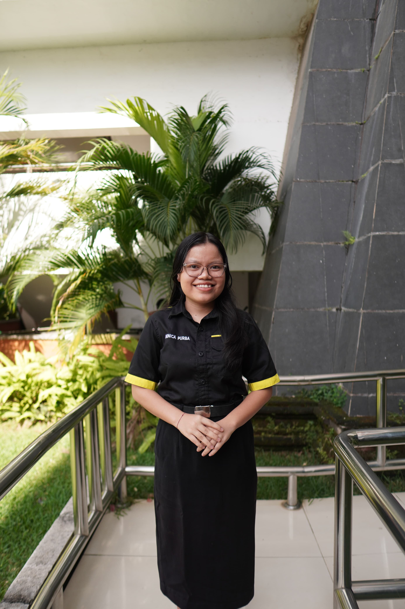

Halo, Saya Monica Agustriani Purba
Mahasiswa Ilmu Komputer • Aktif Organisasi • Web Developer Enthusiast
Tertarik pada pengembangan aplikasi berbasis web dan mobile, serta pengalaman dalam UI/UX design dan Java OOP.
Mahasiswa Ilmu Komputer • Aktif Organisasi • Web Developer Enthusiast
Tertarik pada pengembangan aplikasi berbasis web dan mobile, serta pengalaman dalam UI/UX design dan Java OOP.